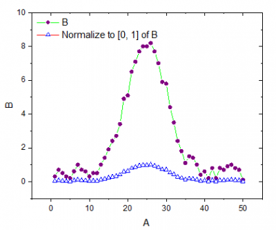

データを正規化するために、2つのユーザインターフェースツールを用意しています。1つはワークシートデータに対して実行し、もう一方はプロットされたデータに対して実行します。どちらの方法でも結果は同様で、このトピックで説明しています。ツールごとの情報は、それぞれのXファンクションのページを参照してください。
または
| 再計算 |
分析結果の再計算の設定を変更します。
詳細情報は、 分析結果の再計算をご覧下さい。 |
|---|---|
| 入力 | 入力データを指定します。
範囲の設定に関する詳細は、入力データを指定するをご覧ください。 |
| 入力データを1つの複合データセットとして扱う | 全入力データセットを一つの複合データセットとして扱うかどうかを指定します。このオプションは正規化の方法として、特定値で割る、参照セルで割る、グラフで指定したポイントで正規化を選択した場合は利用できません。
例えば、2列（A列とB列など）を入力データセットとして選択し、データを最大値で割りたいとします。
|
| 正規化の方法 |
|
| ユーザ定義の値 |
値を入力。正規化の方法が特定値で割るのときに使えます。 |
| v1, v2 |
正規化の方法が[v1, v2]に正規化のときに利用できます。v1 と v2 を含む値の範囲を定義します。 |
| 参照列 / 参照曲線 |
ワークシートの列または参照プロットを指定します。 |
| 正規化ターゲット |
正規化の方法が参照列を使うもしくは参照プロットを使うのときに使えます。
この手法についての情報は、以下のアルゴリズムのセクションをご覧ください。 |
| 参照セル |
ワークシート列をセルの値で割る |
| ピック操作 |
データリーダツールを起動して曲線内のポイントを取得 |
| ピックポイントのX値 |
データリーダで取得したポイントのX値 |
| ピックポイントのY値 |
データリーダで取得したポイントのY値 |
| ピックポイントのインデックス |
データリーダで取得したポイントの行インデックス番号 |
| 出力 |
結果を出力する場所を指定します。 範囲設定については出力結果を確認してください。 |
アルゴリズムの詳細については、OriginのXファンクションヘルプでそれぞれのXファンクションに対する文書を確認して下さい。